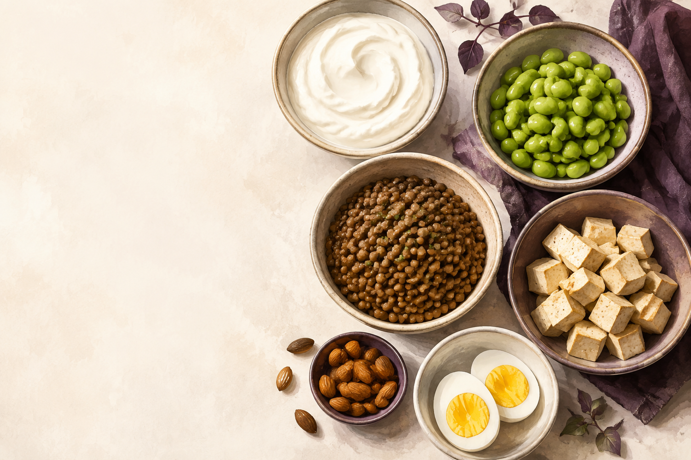

PROTEIN SWAP · IPHONE ET IPAD
Des grammes de protéines aux aliments dans votre assiette.
Saisissez les protéines d’une portion. Découvrez des alternatives alimentaires pesées, ajustez les quantités et comparez les chiffres qui vous intéressent.
40 aliments. Des poids préparés explicites. Vos propres prix.

Comparez des portions concrètes
Trouvez des associations d’un ou deux aliments proches de la quantité de protéines saisie. Consultez ensemble protéines, énergie, glucides et lipides.
Composez à votre façon
Ajustez les grammes, verrouillez une portion et rééquilibrez. Filtrez les choix végétariens ou végétaliens, excluez des aliments et utilisez vos ingrédients disponibles.
Lisez une étiquette, vérifiez les valeurs
Choisissez une photo pour reconnaître son texte sur l’appareil. Confirmez les protéines, l’énergie et la base par portion ou pour 100 g avant de les appliquer.
Comparez vos propres coûts
Saisissez le prix du paquet et son poids préparé. Le coût d’une portion apparaît lorsque tous les prix nécessaires et les devises sont compatibles.
Gardez ce qui vous sert
Retrouvez vos favoris. Enregistrez explicitement ce que vous avez mangé, conservez les entrées datées et comparez les protéines enregistrées aujourd’hui à un objectif facultatif choisi par vous.